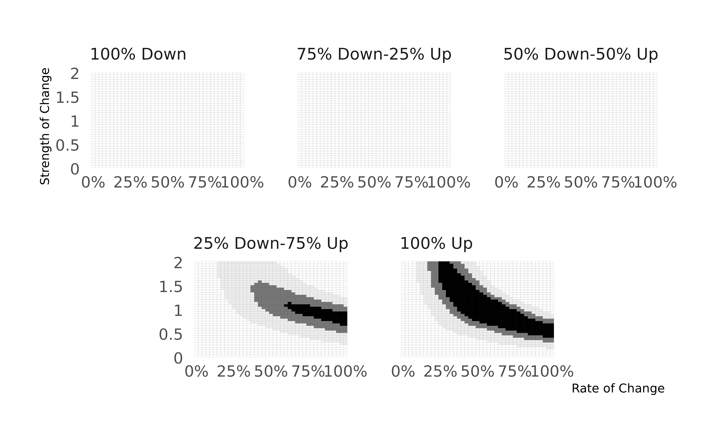

Motivation
Researchers working with panel data often pose three core questions. Given observed survey trajectories of individual responses in empirical data,
- How many people changed?
- How much they changed?
- Who changed within the observed sample?
This often involves questions like whether people changed policy preferences within a specific time-window, or whether a substantive portion of the respondents moved their positions.
That said, longitudinal change could result from various mechanisms: large segments of the population may shift their opinions in a specific direction in small or large amounts; a small segment of the population may have large changes; or a mix of changes—including positive and negative movements—may alter the overall balance.
The gridsearch is designed to give researchers a
preliminary check as to what potential data generation processes may
have generated their observed data.
Illustration
Data Generation Processes
Think about a panel study, where we observe 1,000 individuals across 3 time periods. Let us generate one simulated dataframe, where we know the true data generation process.
set.seed(1123)
d <- buildDGP(
n = 1000,
t = 3,
rate = 0.5,
balance_dir = 1,
balance_res = 0.5,
strength = 1,
reliable = 0.8,
export = TRUE,
patterns = TRUE,
slopes = TRUE
)We generated this data with an underlying data-generation process (DGP).
We noted that there are 1,000 individuals (n) observed 3
times (t). These individuals have latent positions on a
policy item, let’s call it y_true, that shows a normal
latent distribution:
ggplot(d$data, aes(x = y_true)) +
geom_histogram(bins = 50) +
theme_bw() +
labs(x = "Latent Position", y = "")We also specified that 50% of these 1,000 individuals
(rate) changed their underlying latent positions
within this window with 1 SD (strength) in the positive
direction (balance_dir). This means that, in the aggregate,
there was a change of roughly 0.5 SD in the entire population:
lm(y_true ~ t, data = d$data)
#>
#> Call:
#> lm(formula = y_true ~ t, data = d$data)
#>
#> Coefficients:
#> (Intercept) t
#> -0.01765 0.47800Another way to look into this is to randomly pick some individuals and see their patterns:
d$data |>
filter(pid %in% c(sample(1:1000, size = 9))) |>
ggplot(aes(x = t, y = y_true, group = 1)) +
geom_line() +
facet_wrap( ~ pid) +
theme_bw()
Yet, suppose that the survey team asked this question with binary
terms, so respondents have only two options, agree or disagree, when
they answer this question. Suppose also that there are some question
wording and related problems, which make the reliability of this item to
be 80% (reliable). This means that, over a three-wave
period, we have multiple response patterns observed in our empirical
data:
d$patterns
#> # A tibble: 8 × 2
#> patterns n
#> <chr> <int>
#> 1 000 307
#> 2 001 122
#> 3 010 43
#> 4 011 124
#> 5 100 22
#> 6 101 45
#> 7 110 36
#> 8 111 301How can we answer the three questions we initially posed?
Grid Search Algorithm
The grid-search algorithm tries to answer this question. It performs three steps:
It generates a grid of 41 x 40 panels, where there are 41 values representing the percent of units changing from 0 to 1, and 40 values representing the strength of change in SD terms, ranging from 0 to 2. It generates 5 of these panels, where each panel specifies a specific mix of change trajectories: everyone changing negatively, 75% changing negatively and 25% changing positively, 50% changing negatively and 50% changing positively, 25% changing negatively and 75% changing positively, and everyone changing positively. For each cell, the procedure generates simulated dataset, using these parameter values in its DGP.
For each simulated dataset, it generates a contingency table (as presented above) and calculates the summed difference between this contingency table and the observed empirical table. Here is an example of this process:
- Finally, the algorithm goes through several smoothing stages. In the contingency table above, the absolute difference equals to 490. This represents one cell in the grids. The algorithm then smoothes each of these cells by leveraging information from its neighboring cells, such that each cell is averaged using 25 cells (24 neighbor cells and itself). It then estimates a tensor product smooth by fitting a model that interacts rate of change and strength of change in each panel, allowing us to have general estimates about how close a cell is to the observed data generation process.
Let’s apply this to our simulated dataset.
grid <- gridSearch(
data = d$data,
yname = 'y_obs', ## observed binary outcome
tname = 't', ## time variable
pname = 'pid', ## panel identifier
steps = 1, ## the number of simulated datasets per cell
reliability = 0.8, ## assumed reliability score
)
#> This function drops missing values. Tread carefully.
#> Warning in checkNumberOfLocalWorkers(workers): Careful, you are setting up 8
#> localhost parallel workers with only 4 CPU cores available for this R process
#> (per 'system'), which could result in a 200% load. The soft limit is set to
#> 100%. Overusing the CPUs has negative impact on the current R process, but also
#> on all other processes of yours and others running on the same machine. See
#> help("parallelly.options", package = "parallelly") for how to override the soft
#> and hard limits
#>
#> We now start the calculations. There will be 3 steps.
#>
#> Step 1 for grid search...
#>
#> Step 2 for grid search...
#>
#> Step 3 for grid search...
print(grid)
#> # A tibble: 8,200 × 6
#> rate strength direction error pattern n
#> <dbl> <dbl> <fct> <dbl> <chr> <int>
#> 1 0 0.05 100% Down 286. contingency 1000
#> 2 0 0.05 75% Down-25% Up 292. contingency 1000
#> 3 0 0.05 50% Down-50% Up 286. contingency 1000
#> 4 0 0.05 25% Down-75% Up 284. contingency 1000
#> 5 0 0.05 100% Up 292. contingency 1000
#> 6 0 0.1 100% Down 286. contingency 1000
#> 7 0 0.1 75% Down-25% Up 292. contingency 1000
#> 8 0 0.1 50% Down-50% Up 286. contingency 1000
#> 9 0 0.1 25% Down-75% Up 285. contingency 1000
#> 10 0 0.1 100% Up 292. contingency 1000
#> # ℹ 8,190 more rowsThe gridSearch function gives us a tibble of 8,200 rows
and 6 columns:
-
raterepresents 41 values of % changing in the DGP, -
strengthrepresents 40 values of SD change, -
directionrepresents 5 conditions of mixing positive and negative changers, -
erroris the predicted error score (the distance between the simulated dataset and the observed dataset, with smoothing procedures above applied), -
patternrepresents the calculation method (see below), -
nshows the unique number of individuals from the empirical dataset.
Evaluating the Potential DGPs
Let’s look at the error scores that minimize the distance:
grid |> arrange(error)
#> # A tibble: 8,200 × 6
#> rate strength direction error pattern n
#> <dbl> <dbl> <fct> <dbl> <chr> <int>
#> 1 0.525 1.05 100% Up 68.0 contingency 1000
#> 2 0.55 1.05 100% Up 68.7 contingency 1000
#> 3 0.55 1 100% Up 68.8 contingency 1000
#> 4 0.5 1.1 100% Up 69.2 contingency 1000
#> 5 0.525 1.1 100% Up 69.3 contingency 1000
#> 6 0.5 1.05 100% Up 69.4 contingency 1000
#> 7 0.525 1 100% Up 69.5 contingency 1000
#> 8 0.575 1 100% Up 69.8 contingency 1000
#> 9 0.575 1.05 100% Up 71.3 contingency 1000
#> 10 0.5 1.15 100% Up 71.3 contingency 1000
#> # ℹ 8,190 more rowsRemember that our initial dataframe featured 50% of the sample changing 1 SD in a positive direction. We see that the smallest error terms are very close to these values.
We can visually see the best terms using gridPlot:
gridPlot(grid)
The plot shows the best values that approximate to the data at 1%, 5% and 10% quantiles.
Extensions
An Alternative Comparison
It is plausible that when t is sufficiently large, the
use of contingency tables might be problematic, as we may want to impose
some constraints to the observed responses if we do not want to take
each survey response too seriously. gridSearch
function has a pattern argument that takes
slopes instead of patterns as its response. We
showed the examples using the contingency table approach above, but we
propose an alternative, too.
In this approach, people can use the slopes option,
which estimates logistic regressions at the individual level—effectively
fitting varying individual fixed effects models—and calculates the model
predicted difference between units’ first response and last response.
This gives us an approximation as to how much individuals changed over
time, on average.
These slopes are represented for each individual in the dataframe:
d$slopes
#> # A tibble: 1,000 × 2
#> pid estimate
#> <int> <dbl>
#> 1 1 0
#> 2 2 0
#> 3 3 0
#> 4 4 0
#> 5 5 0
#> 6 6 1
#> 7 7 -1
#> 8 8 0
#> 9 9 1
#> 10 10 1
#> # ℹ 990 more rowsThe procedure is exactly the same, with the exception that rather than calculating summed differences across contingency tables, the algorithm now calculates a Kilmogorov-Smirnov statistic using the observed distribution of slopes and the simulated distribution of slopes.
The Detection of Changers
Suppose that we settled on a DGP—let’s say, 50% of the people changing 1 SD in the positive direction. How much can we confident to pin down specific individuals in the dataset?
simulateChangers function allows us to know the answer
to that question.
The procedure is simple: feed the DGP into the function—just like the
buildDGP function—and it will generate
simulated datasets, use the varying slope procedure described above, and
compare whether a specific individual who is known to be a changer from
the simulation procedure can be detected using the individual fixed
effects, conditional on the strength parameter specified
before.
Let us see our example.
sim <- simulateChangers(
n = 1000,
t = 3,
rate = 0.5,
balance_dir = 1,
balance_res = 0.5,
strength = 1,
reliable = 0.8,
nrep = 500
)
#> Warning in checkNumberOfLocalWorkers(workers): Careful, you are setting up 8
#> localhost parallel workers with only 4 CPU cores available for this R process
#> (per 'system'), which could result in a 200% load. The soft limit is set to
#> 100%. Overusing the CPUs has negative impact on the current R process, but also
#> on all other processes of yours and others running on the same machine. See
#> help("parallelly.options", package = "parallelly") for how to override the soft
#> and hard limits
print(sim)
#> # A tibble: 500 × 4
#> sims kappa sensitivity specificity
#> <int> <dbl> <dbl> <dbl>
#> 1 1 0.113 0.321 0.792
#> 2 2 0.0547 0.282 0.771
#> 3 3 0.189 0.388 0.802
#> 4 4 0.147 0.355 0.792
#> 5 5 0.141 0.367 0.774
#> 6 6 0.154 0.370 0.785
#> 7 7 0.102 0.331 0.773
#> 8 8 0.128 0.330 0.793
#> 9 9 0.173 0.395 0.783
#> 10 10 0.174 0.400 0.775
#> # ℹ 490 more rowsAs can be seen, simulateChangers spits out three
values:
- a
sensitivitymeasure, the ability to identify true changers; - a
specificitymeasure, the ability to identify true non-changers, and - a
kappascore, a weighted summary of the two measures.
Warnings and Notes
We would like to flag a few issues that you need to be aware of:
- Currently,
gridsearchonly accomodates binary outcomes. We are hoping to generalize these procedures to cases where we have more than 2 response categories. - While the
slopesmethod in thegridSearchfunction may be helpful in longer panels, we note that it is computationally heavy as it calculates individual slopes for each individual. - All functions rely heavily on parallelization, with an argument
workersthat allows you to control the number of parallel workers the functions will use. We strongly suggest that the calculations are parallelized; otherwise the wait times can be long.
For more details about the protocol, please see the article, The Promises and Pitfalls of Using Panel Data to Understand Individual Belief Change, stored in SocArXiv.